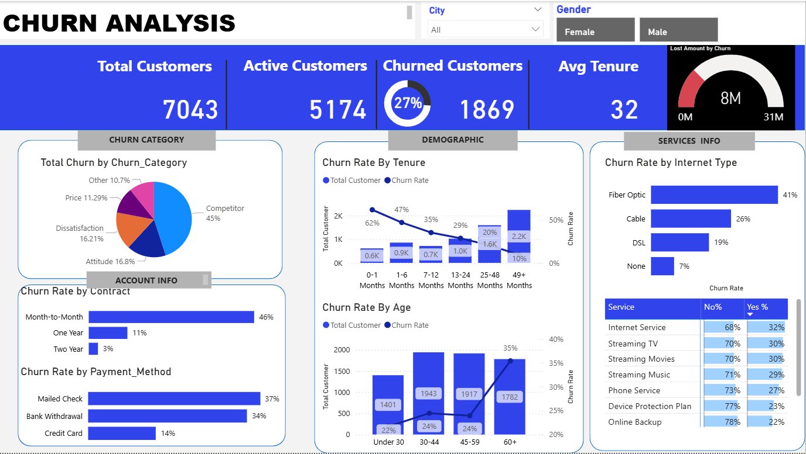
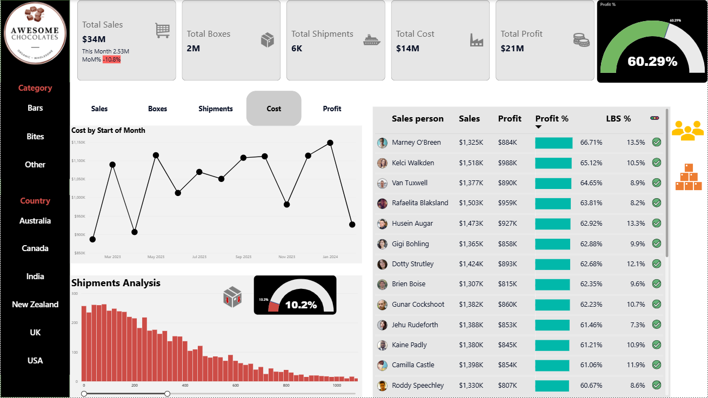
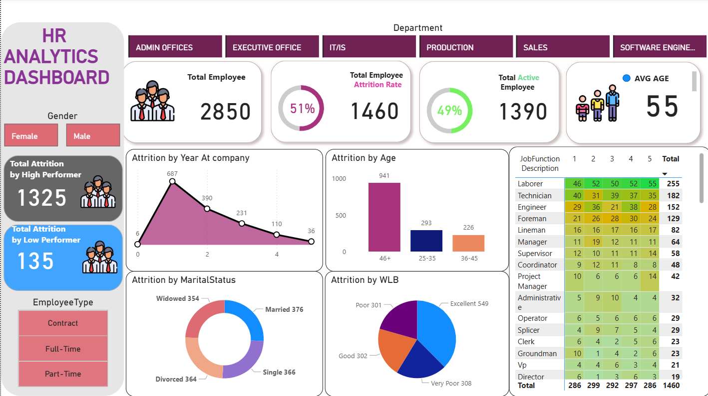
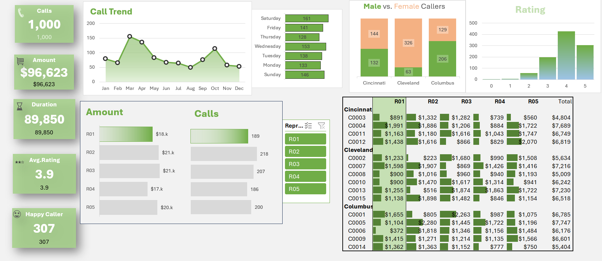

Data Analyst with hands-on project experience solving business problems across telecom, sales, and HR datasets. Proficient in SQL, Python, Excel, and Power BI, with a strong background in Computer Applications (BCA). Skilled at integrating modern AI tools (ChatGPT, Claude, GitHub Copilot) to accelerate SQL/DAX writing and data cleaning 3x faster without compromising human validation or accuracy.
Isolated root drivers behind an $8M telecom churn risk by applying SQL data cleaning and Python Chi-Square statistical testing to uncover key onboarding failure points.
Engineered unified visibility across $34M in sales & $21M in profit with dynamic Power BI DAX measure switching (Sales, Profit, Cost, Boxes, Shipments).
Leverages ChatGPT, Claude, and GitHub Copilot to prototype complex SQL queries, DAX formulas, and Python scripts faster while maintaining 100% human verification.
Technical proficiency combined with business domain understanding, critical thinking, and data storytelling.
Modern analytics demands speed and accuracy. I utilize AI copilots to prototype queries, clean code, and draft insights while validating every data result manually.
Define business metrics, key questions, and data schemas before writing any prompts or code.
Use ChatGPT & Claude to draft initial SQL queries, DAX measures, and Python Chi-Square test templates 3x faster.
Rigorously test, debug, and cross-examine all AI-generated queries against raw database records to ensure 100% accuracy.
Translate clean dataset outputs into interactive Power BI dashboards with clear business recommendations.
Real-world analytical solutions delivering measurable business impact and executive visibility.

Solved an $8M revenue-loss problem by identifying why 27% of telecom customers (1,869) were churning, using SQL for cleaning and Python for statistical Chi-Square testing.

Solved a visibility problem across $34M in sales and $21M in profit by cleaning data in Power Query, analyzing performance in SQL, and building dynamic DAX measure switching.

Solved a retention problem behind a 51% attrition rate (1,460 employees) by using SQL to segment turnover by age, tenure, department, and satisfaction.

Created an interactive operational dashboard to analyze call volume, representative revenue, customer satisfaction, and weekend demand spikes.
Seeking entry-level Data Analyst positions. One-click copy or visit my profiles below!